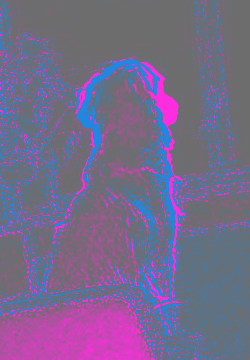
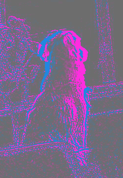

· updated · 8 minute read
A 4D model of the room using a stationary $12 camera and wave physics
I started OpenPetCam last week, a fully open-source project that lets anyone set up a self-hosted pet camera with pet detection, following and many other useful features. This week, I wanted to test the limits of this setup and see if I could produce a realistic model of the room, and perhaps use it as a reinforcement learning (RL) environment to improve following and localization.
In this blog post, I aim to explain the process so you can try the experiment on your own setup. The build instructions have the commands and dependencies.
The head is spinning
The head of the camera I am using, a Cinnado D1, gives me roughly 320° of pan and 70° of tilt in this setup. The very first idea was to take overlapping pictures from every possible angle and stitch a panorama from them. Match the same corner in overlapping pictures and you can work out the lens distortion and how far each motor step turns the image. That let me stitch the pictures together and attach a direction to each pixel. Here is the code for camera calibration and panorama stitching.
I could point to the sofa on the panorama; putting it on a floor plan would require a distance.
From panorama to depth
Now we know the direction of every visible pixel. How can we estimate how far away it is and turn the panorama into a 3D room? One obvious idea is photogrammetry. However, our camera stays on one mount and mostly rotates, so there is no useful stereo baseline in this build. Lucky for us, there are neural networks for depth estimation from a single camera. Depth Anything 3 and Marigold are two examples. I used Depth Anything 3 for depth here.
In a nutshell, these networks have learned what the 3D world usually looks like from training images. Walls tend to be vertical, floors horizontal, and familiar objects look smaller as they move farther away. Given an image, they can estimate how far away each pixel is, producing something called a depth map.
There is one problem, though: a neural network can guess the shape of a room without knowing its actual size. A room that is 3 metres wide and one that is 6 metres wide might produce very similar images, so relative-depth models cannot reliably tell them apart.
An approximate ruler
How can we measure a real distance without asking the user to do anything? One idea I had was to send out a signal and measure how long its reflection takes to come back. On the pet camera we have:
- Passive optics: the camera itself doesn’t emit light; it only collects it. On its own, this doesn’t give us an echo to time.
- Infrared night vision and IR LEDs: we can emit light and receive it, but the speed of light is very, very fast. A 10 cm difference in distance changes the round-trip delay by about 0.67 nanoseconds, far beyond what this camera can time without dedicated time-of-flight hardware.
- A loudspeaker and microphone: sound travels at approximately 343 m/s, so an echo from an object 5 metres away returns in about 29 milliseconds. At a 48 kHz sampling rate, one sample corresponds to roughly 3.6 mm of one-way range. That is the sample spacing, not the measurement accuracy, but sounds like this should work!
The speaker plays a frequency sweep. Deconvolving the recording compresses that long sound into a short response, with peaks at different delays. The room contributes to those peaks, along with the speaker, microphone, housing and recording chain.
I used a recurring peak near 4.7 milliseconds as a candidate floor return. With the timing and path assumptions in that first build, it put the floor roughly 0.8 metres below the lens. That gave the model a scale to work with.
Just for a reality check, I got out a tape measure: 31 inches, which is 0.79 m. Nice!
Now we have a ruler!
Since we have an estimate of the camera’s height above the floor and its viewing angle, we can calculate the distance to visible points on a flat floor using simple trigonometry.
We can then use these distances to estimate the scale of our depth map. For example, if the map puts a point on the floor 2 units away, but geometry tells us it is actually 4 metres away, we have a scale factor of 2.
Once we have calibrated the depth, each pixel gives us two things: a direction from the panorama and an estimated distance. Multiplying the unit direction vector by that distance gives us a point in 3D space. Do this for thousands of pixels, and we get a point cloud: an approximate 3D reconstruction of the room.
The depth fusion code merges the overlapping estimates and smooths their seams. In this build, wall edges marked on the panorama and simple furniture shapes also help organize the surface.
The result is not a perfect 3D scan, but a roughly scaled initial world model that we can keep refining. We will talk about that in more detail if it works.
You can orbit the model and recognise the room.
Wait, but how about 4D?
Once the room had a shape, I could put an observation somewhere. The fourth dimension is time. First, there is the detected dog: I can now map her detections to estimated points in the 3D room and accumulate them as a heatmap. This gives me a map of her “hot spots”, where she likes to hang out the most. I can also store camera observations, such as brightness and IR response, and see how a surface’s brightness changes over time.
Of course, the heatmap also reflects where the camera spends its time looking.
Speaking of IR
At night, the camera supplies its own light. Previously, we dismissed infrared as a ruler because our camera cannot measure how quickly the light returns, but we can measure how much light comes back. The idea is simple: take one frame with the LEDs off and another with them on, then subtract: IIR = Ion − Ioff. This approximately isolates the illumination supplied by our LEDs, provided nothing moves and the ambient light stays unchanged.
For that subtraction to mean anything, exposure, gain, image processing and the IR-cut filter also need to stay fixed. We need pixel values proportional to light, or a calibrated camera response to undo their encoding.
The saved experiment includes my dog beside the window. Here are the actual cropped frames, followed by their signed differences. This is a daylight example; the capture log records the IR-cut filter as out. I use an off frame on either side of the on frame to estimate the background at the moment the LEDs were on.


estimated off = 0.49 × off before + 0.51 × off after
residual = on − estimated off




At the marked fur pixel, averaging the three encoded colour channels gives off before 51.00, on 52.67 and off after 50.67. The estimated off value is 50.83, so the residual is 52.67 − 50.83 = +1.84 pixel levels.
Across this crop, the median absolute off-frame change is 2.0 levels, compared with 2.5 levels for the residual. The coloured outlines around her head also appear in the off-frame comparison: they include movement.
There is a catch: a surface can look bright because it reflects infrared well, because it is close, or because it faces the light directly. Fortunately, we already have an approximate 3D model!
Using its distances and surface orientations, we can compensate for some of these effects. With the lamp and camera response calibrated too, this could give us an estimate of relative infrared reflectivity. For now, these saved JPEG observations give us a qualitative response map, not a corrected response or reflectivity measurement. A wider layer needs the same off/on/off sequence repeated across overlapping camera directions.
This will not reliably tell us whether something is wood or fabric, and shiny surfaces need more complicated treatment. But it gives us another useful property to work towards: how each surface responds to light we control. And unlike a thermal camera, we are measuring reflected light, not my pet’s body temperature.
Uncertainty and self-improvement
As it stands, this is a fun engineering exercise. To turn it into a self-improving Room World Model, what’s missing? A useful way to act on uncertainty. If we knew where our model was weakest, we could come up with hypotheses about how to improve it. Beyond the obvious “look at it, why is this wall bent?”, one clue is how well the different measurements agree. We already have visual, depth, IR and acoustic layers attached to our surfels, small surface patches that are something between a pixel and a voxel. Their disagreement can point us towards places that need another look.
The next step is to turn uncertainty into a to-do list. When different layers disagree, the model could propose competing explanations: perhaps the surface is closer than we thought, perhaps it reflects IR unusually well, or perhaps our measurement was simply noisy. Each explanation should predict something different about a future observation. We could then choose an experiment, such as inspecting the region again, changing the illumination or repeating an acoustic probe, that is likely to tell these explanations apart.
The model would improve by making predictions, testing them, and keeping the changes that explain new measurements better. Over time, this loop could refine the room’s geometry, its material properties, and even our understanding of the camera itself. That is the path from a reconstructed room to a self-improving Room World Model: one that knows what it is unsure about and chooses what to measure next.